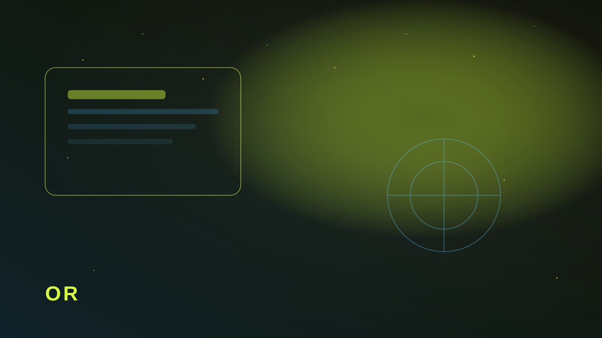

Когда бот выигрывает
Аудитория уже в Telegram. Продукт простой: запись, заказ, FAQ. Не нужен большой каталог. Тогда бот запускается за 1–2 недели и закрывает задачу дешевле лендинга.
Сайт нужен, когда важны SEO, кейсы, доверие «с улицы» или каталог с фильтрами. Часто оптимальна связка: лендинг для доверия + бот для заявок.

Три рабочих сценария под бота
- Запись на услугу с выбором слота и напоминанием.
- Заявка с квалификацией (бюджет/сроки/тип задачи).
- FAQ + эскалация живому менеджеру по кнопке.
Если в сценарии появляются сложные сравнения товаров и десятки фильтров — лучше сайт. Бот начнёт превращаться в неудобный интерфейс.